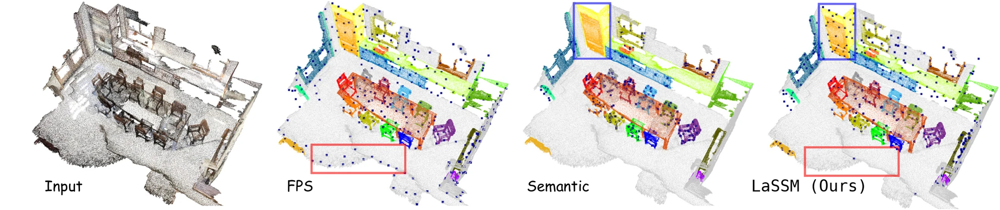
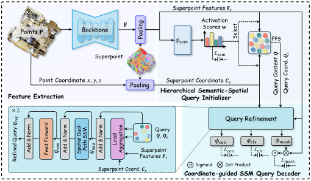
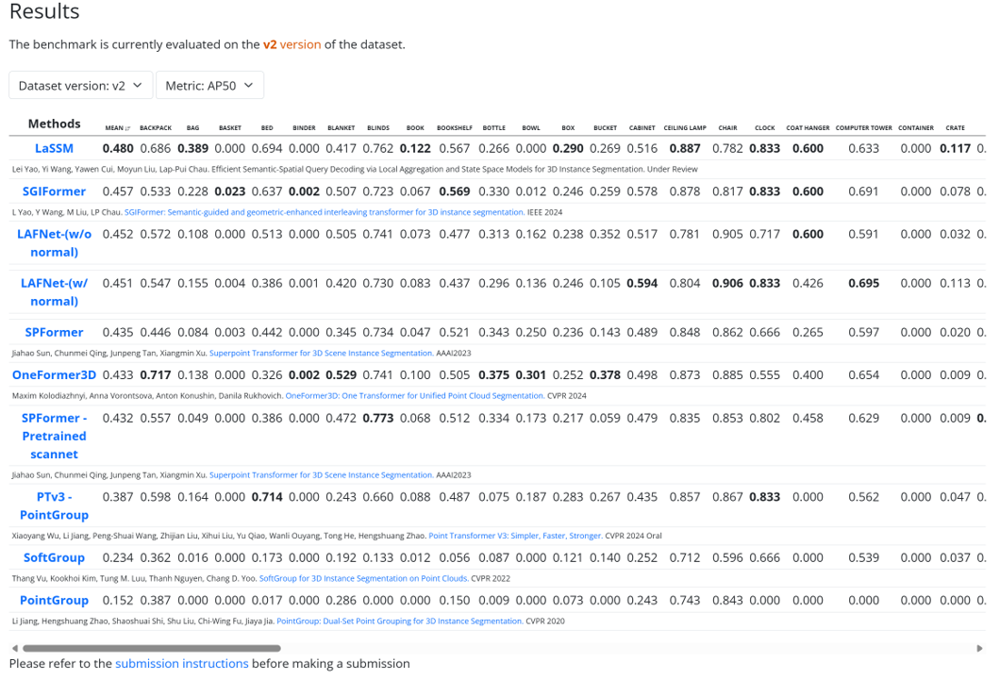
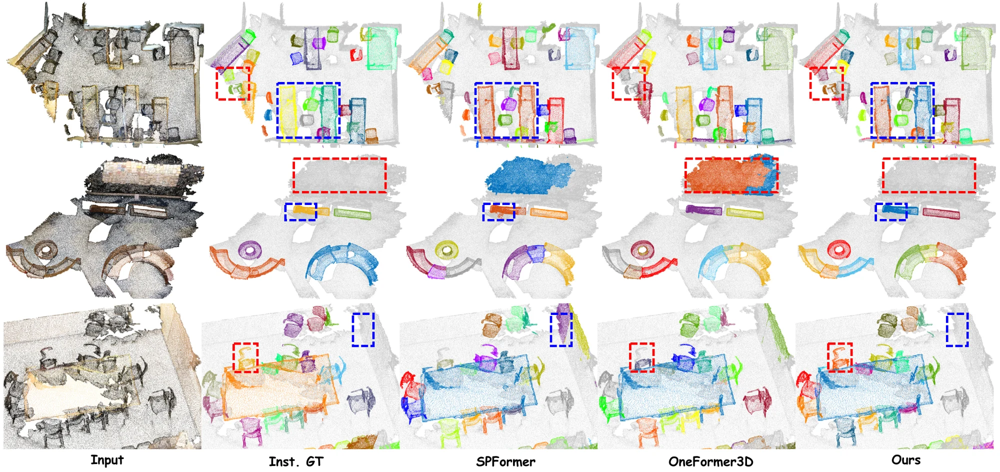
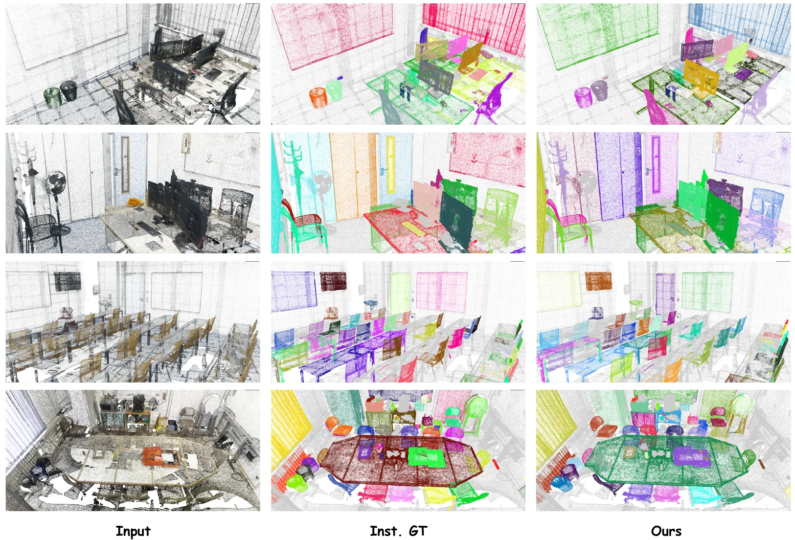

1The Hong Kong Polytechnic University · 2Huazhong University of Science and Technology
We pick queries from superpoints using both semantic and spatial cues, then refine them with a coordinate-guided state space model instead of attention — first place on ScanNet++ V2 at one third of the FLOPs of the previous best.

Query-based 3D instance segmentation is held back on two fronts: sparse point clouds make query initialization difficult, and query decoders lean on computationally intensive attention. LaSSM addresses both, prioritising simplicity and efficiency. A hierarchical semantic-spatial query initializer derives queries from superpoints using both semantic cues and spatial distribution, covering the scene comprehensively and converging faster.
A coordinate-guided SSM decoder then refines them: local aggregation keeps each query within a geometrically coherent region, and a spatial dual-path SSM block captures dependencies across the query set through the associated coordinates. LaSSM ranks first on the ScanNet++ V2 leaderboard, beating the previous best by 2.5% mAP with only 1/3 FLOPs, and stays competitive on ScanNet, ScanNet200, S3DIS and ScanNet++ V1 at lower cost.

Queries are drawn from superpoints by jointly weighing a semantic activation score and spatial distribution, instead of relying on farthest point sampling or semantics alone. This resolves the query initialization dilemma: the scene is covered comprehensively, and training converges faster.
A local aggregation scheme confines each query to a geometrically coherent neighbourhood, and a spatial dual-path SSM block propagates dependencies across the query set using the associated coordinates — linear-time refinement in place of quadratic attention.
| Method | Val AP₅₀ | Test mAP | Test AP₅₀ | Test AP₂₅ |
|---|---|---|---|---|
| PointGroup | 14.7 | 9.1 | 15.2 | 21.0 |
| SoftGroup | – | 14.2 | 23.4 | 29.3 |
| PTv3-PG | – | 25.9 | 38.7 | 44.6 |
| OneFormer3D | 41.1 | 28.2 | 43.3 | 51.7 |
| SPFormer | 42.1 | 29.0 | 43.5 | 51.5 |
| SGIFormer | 41.1 | 29.9 | 45.7 | 54.4 |
| LaSSM (ours) | 43.5 | 32.4 | 48.0 | 54.8 |
| Method | ScanNet V2 AP₅₀ | FLOPs | ScanNet++ V2 AP₅₀ | FLOPs | Params | Time |
|---|---|---|---|---|---|---|
| OneFormer3D | 76.3 | 4.082G | 41.1 | OOM | – | – |
| SGIFormer | 78.4 | 4.456G | 41.1 | 13.513G | 15.96M | 355.86ms |
| LaSSM (ours) | 78.1 | 3.711G | 43.5 | 4.777G | 18.38M | 379.94ms |
| Benchmark | mAP | AP₅₀ | AP₂₅ | Resources |
|---|---|---|---|---|
| ScanNet++ V2 Val | 29.1 | 43.5 | 51.6 | config log model |
| ScanNet Val | 58.4 | 78.1 | 86.1 | config log model |
| ScanNet200 Val | 29.3 | 39.2 | 44.5 | config log model |



@article{yao2025lassm,
title={LaSSM: Efficient Semantic-Spatial Query Decoding via Local
Aggregation and State Space Models for 3D Instance Segmentation},
author={Yao, Lei and Wang, Yi and Cui, Yawen and Liu, Moyun and Chau, Lap-Pui},
journal={IEEE Transactions on Circuits and Systems for Video Technology},
year={2026},
}